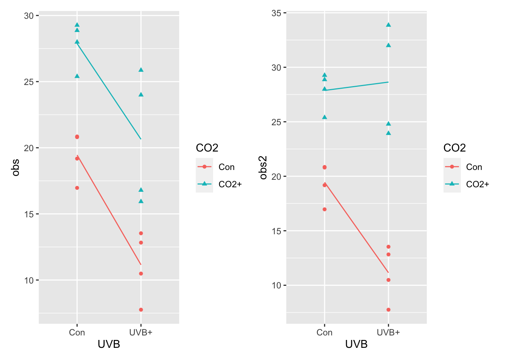

Chapter 8 Designs for testing for interactions: factorial designs.
8.1 Introducing Interactions
Before jumping into an example, let’s introduce a simple statement that forms the core of both asking and interpreting interactions.
If there is an interaction between two explanatory variables, X and Z, on our response variable Y, then:
The effect of X on Y varies by Z. OR The effect of X on Y depends on Z.
This use of varies by OR depends on defines context dependency and that’s what defines interactions.
Now, let’s return to our CO2 and UV-B solar radiation experiment in the Arctic Tundra example to introduce the idea of an interaction again.
Context: an arctic tundra study Increasing ultraviolet-B (+UV-B) radiation from ozone depletion (the arctic ozone hole) Increasing atmospheric CO2 (+CO2) from anthropogenic emissions For plants: UV-B potentially harmful, +CO2 potentially beneficial Therefore +CO2 could alleviate UV-B damage impacts.
Hypotheses +UV-B radiation will reduce the growth of arctic plants +CO2 will increase the growth of arctic plants +UV-B radiation impacts will be less under +CO2
What is unique about these context and hypotheses? It’s the presentation of CO2 and UVB in the same statement and the use of words like “the effect of X will alleviate the impacts of Y” and words like “the effects of X will be less under Y.” These words and phrases reflect the context dependency of the effects of treatment levels.
Thus, to restate what we introduced above…. when we talk about interactions, we can rely on a very simple vocabulary that is independent of the actual treatment levels: we can always describe an interaction like this:
The effect of X on Y depends on Z.
or
The effect of X on Y varies by Z.
In this ‘rubric,’ Y is the response variable, and X and Z are explanatory, independent variables. So, in our example above,
the effect of CO2 on plant biomass yield depends on UV-B radiation levels.
OR
the effect of CO2 on plant biomass yield varies with UV-B radiation levels.
This simple phrasing describes any interaction.
Here are some numerical examples to drive home the point.
Control = 20g Yield UV-B = 10g Yield C02 = 29g Yield
ADDITIVE RESULT: C02 + UV-B = 39g Yield SYNERGISTIC RESULT: C02 + UV-B = 60g Yield ANTAGONISTIC RESULT: C02 + UV-B = 19g Yield
8.1.1 Let’s design an experiment, again…
Your resources:
The arctic research station has given permission for 16 plots (each 2m x 2m) in the natural vegetation nearby. - One UV-B plot (2m x 2m) costs £4000 (this provides the UV-B lamps, frame, power and control system, wooden walkways around the plots) - One CO2 plot (2m x 2m) costs £6000 (this provides a CO2 release system, CO2 control and covers CO2 purchase costs, wooden walkways around the plots) - One control plot (2m x 2m) costs £200 (marking posts, wooden walkways around the plots) - Yes, the CO2 supply system does fit underneath the UV-B lamps.
You have a budget of £86,000
Design an experiment to test the hypotheses. (An answer is on the BB Site)
8.1.2 The Factorial Design: How and Why Study Interactions?
The UV-B and C02 experiment could be thought of as two experiments a Control vs UV-B and a Control vs C02 experiment. If we combine these we get a Factorial Experiment where the treatments are
- Control
- UV-B
- C02
- UV-B + C02
So we have all combinations of treatments.
But do we treat each of these as unique treatments (e.g. the one-way ANOVA example)? No, we don’t. We design and analyse the data we collect in a two-way analysis - a factorial design. Two-way ANOVA (and ANCOVA - see later), are the toolboxes.
Factorial treatments have two main advantages. When factors DO interact – so the effect of C02 depends on UV-B – then we can estimate the interaction - the dependency. One-way designs cannot do this, and can lead to serious misunderstandings (because we are assuming that the effect of one thing DOES NOT depend on the other).
Furthermore, when factors DON’T interact, factorial designs are more efficient (smaller error variance) than one-way designs experiments.
Hence ALWAYS use factorial designs when you can!
8.2 A Factorial Design and the Two-Way ANOVA
I’d recommend a new script now for this section. It’s a pretty distinct example. Don’t forget to use library() at the top to get all those packages working for this script. And don’t forget, this script can live in the same R Project as the other one(s).
set.seed(123)
Nreps <- 4 # 4 replicates per treatment level
trt <- c(2,2) # sets out the 2-way design
design <- design.ab(trt,r=Nreps,serie=0,design="crd")$book
head(design)## plots r A B
## 1 1 1 2 1
## 2 2 1 1 2
## 3 3 1 1 1
## 4 4 1 2 2
## 5 5 2 2 2
## 6 6 2 2 1So, the design.ab function generates a nice picture, but uses numbers instead of words for the various treatments and has set Letters as the treatments.
We don’t support this approach - you WILL forget what the numbers and letters mean, so let’s change these CODES to represent CO2 and UVB REALITY. We’ll use fct_recode from the tidyverse package called forcats (for categories, but we like cats).
design <- design %>%
rename(UVB = A, CO2 = B) %>%
mutate(UVB = fct_recode(UVB, "Con" = "1", "UVB+" = "2"),
CO2 = fct_recode(CO2, "Con" = "1","CO2+" = "2"))
head(design, 10) # is this what you expect## plots r UVB CO2
## 1 1 1 UVB+ Con
## 2 2 1 Con CO2+
## 3 3 1 Con Con
## 4 4 1 UVB+ CO2+
## 5 5 2 UVB+ CO2+
## 6 6 2 UVB+ Con
## 7 7 3 UVB+ CO2+
## 8 8 2 Con Con
## 9 9 3 Con Con
## 10 10 4 Con ConNOTE 1: this is using the
fct_recodefunction from the forcats package in the tidyverse collection.
NOTE 2: we used the design = “crd” argument to specify a completely randomised, 2-way factorial design… you could make this a block design with the “rcbd”…. see the help file for
design.ab
8.2.1 Build the Data
Here we will build two sources of data - one that has NO INTERACTION, and one that DOES.
#Sample Sizes and errors
Total.units <- 2 * 2 * Nreps
error <- rnorm(Total.units,0,3)
# the data with no interaction
design$obs <- 20 -
(design$"UVB"=="UVB+") * 10 +
(design$"CO2" == "CO2+") * 9 +
error
# the data with interaction
design$obs2 <- 20 -
(design$"UVB"=="UVB+") * 10 +
(design$"CO2" == "CO2+") * 9 +
# when both are together add 8 more (synergy)
((design$"UVB"=="UVB+") & (design$"CO2" == "CO2+")) * 8 +
error
head(design)## plots r UVB CO2 obs obs2
## 1 1 1 UVB+ Con 12.82805 12.82805
## 2 2 1 Con CO2+ 25.38908 25.38908
## 3 3 1 Con Con 19.17974 19.17974
## 4 4 1 UVB+ CO2+ 25.85980 33.85980
## 5 5 2 UVB+ CO2+ 15.92984 23.92984
## 6 6 2 UVB+ Con 7.75704 7.757048.2.2 Plot the data!
Here we combine some dplyr magic (calcuating means in each group - there are two grouping variables!), some ggplot magic (adding the lines connecting the means on top of the raw data) and the beauty of patchwork, the package for plot layouts. Don’t forget to check that you’ve got all of the library() calls at the top of your script, and that you ran them!
# No interaction summary
sumDat1 <- design %>%
group_by(UVB, CO2) %>%
summarise(
obs = mean(obs)
)
# with interaction summary
sumDat2 <- design %>%
group_by(UVB, CO2) %>%
summarise(
obs2 = mean(obs2)
)
# no interaction
p1 <- ggplot(design, aes(x = UVB, y = obs, colour = CO2, shape = CO2, group = CO2))+
geom_point()+
geom_line(data = sumDat1)
# with interaction
p2 <- ggplot(design, aes(x = UVB, y = obs2, colour = CO2, shape = CO2, group = CO2))+
geom_point()+
geom_line(data = sumDat2)
p1+p2
What you see above on the left, is a pattern that suggest that the effect of ______ on ________ does not vary by ________. In contrast, on the right…..:
8.2.3 Analyse the data
# model with no interaction
int_mod_1 <- lm(obs ~ CO2*UVB, data = design)
# model with interaction
int_mod_2 <- lm(obs2 ~ CO2*UVB, data = design)
# model with interaction, but specified incorrectly.
int_mod_3 <- lm(obs2 ~ CO2 + UVB, data = design)
anova(int_mod_1)## Analysis of Variance Table
##
## Response: obs
## Df Sum Sq Mean Sq F value Pr(>F)
## CO2 1 321.00 321.00 33.469 8.671e-05 ***
## UVB 1 241.27 241.27 25.156 0.0003013 ***
## CO2:UVB 1 1.13 1.13 0.118 0.7371854
## Residuals 12 115.09 9.59
## ---
## Signif. codes: 0 '***' 0.001 '**' 0.01 '*' 0.05 '.' 0.1 ' ' 1anova(int_mod_2)## Analysis of Variance Table
##
## Response: obs2
## Df Sum Sq Mean Sq F value Pr(>F)
## CO2 1 671.67 671.67 70.0311 2.364e-06 ***
## UVB 1 56.75 56.75 5.9165 0.03159 *
## CO2:UVB 1 82.15 82.15 8.5654 0.01268 *
## Residuals 12 115.09 9.59
## ---
## Signif. codes: 0 '***' 0.001 '**' 0.01 '*' 0.05 '.' 0.1 ' ' 1anova(int_mod_3)## Analysis of Variance Table
##
## Response: obs2
## Df Sum Sq Mean Sq F value Pr(>F)
## CO2 1 671.67 671.67 44.269 1.58e-05 ***
## UVB 1 56.75 56.75 3.740 0.07519 .
## Residuals 13 197.24 15.17
## ---
## Signif. codes: 0 '***' 0.001 '**' 0.01 '*' 0.05 '.' 0.1 ' ' 1Note the differences in the outputs. Not what we infer if we model the interaction data incorrectly. There is no free lunch. You must understand your data and your question!
8.2.4 final figuring
Don’t forget that the correct standard error for the ‘result’ is the residuals mean squared. You can use the dplyr+ggplot2 method, or visreg.
Here we use visreg and put the figure next to our original ggplot for the interaction data.
We plot the correct model for the interaction data.
p3 <- visreg(int_mod_2,"CO2",by="UVB",gg=TRUE) +
theme_classic()
p2+p3